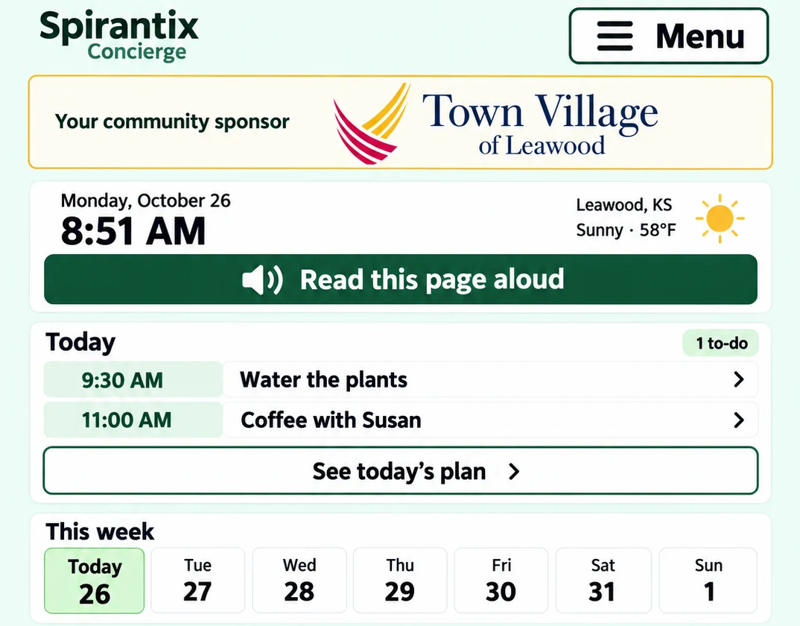

For senior living communities
Give every resident their own app, alongside the systems you already run
Spirantix is a private, resident-owned layer that works with your existing platform, not instead of it. Your community sponsors it, shares its calendar and memories into each resident's own app, and never sees their personal data. Residents get a Concierge that helps them plan the day, keep their stories, and learn AI at their own pace.
Who decides
Two people decide, and they look for different proof
In independent living, the resident usually does the research and makes the call. In memory care, the adult child usually leads. Either way, the tour is where the decision turns. Families watch how staff treat residents, what is actually happening in the common room, and whether the person they love will keep control of their day.
Spirantix puts the same event in two places: your team's calendar, which you keep running as you do today, and the resident's own app, where they see it in their words and share it with family only if they choose.
What changes
What your community adds, and what it never touches
Built for the executive director who sponsors it and the activities lead who shares into it.
A private app for every resident
Residents use Spirantix on their own phone, tablet, or laptop. Your community sponsors the seats; it never reads what residents write, ask, or keep.
Your calendar, in their day
Publish your community calendar into each resident's app. They see what is on today in plain words, with reminders they control.
Memories that stay with the person
Share photo albums and stories from community events. Residents keep them in their own words and can ask for them by voice.
One-way by design
Events and memories come in. Resident data never goes back to your platform. That boundary is stated in the terms, in the product, and at every login.
Your platform keeps doing its job
Keep the operations system you run today: calendar, dining, staffing, family messaging. Spirantix sits beside it, and over time we will bring its events and memories in rather than ask you to leave it.
AI learning residents choose
Plain-language AI and scam-safety lessons that residents pick for themselves, not activity content assigned by staff.
Planned
Each capability is marked Live, In build, or Planned in the comparison below.
For residents
Every resident gets their own app
Residents use the Spirantix Concierge on their own phone, tablet, or laptop.
- Ask for anything in plain language, and the Concierge brings in the right help
- Daily planning, with reminders by text or email
- Stories and photo albums in their own words
- Safe, ad-free web search that names its sources
- A family member or caregiver can help, only with their permission
Your community, front and center
Every resident who lives in a senior living community is asked to name it, so your community shows prominently in their app. Once your community joins and their connection is approved, residents receive your events on their calendar and your memories: photo albums and stories, with video coming.

What a sponsor does
Fund the app, share into it, keep your own system
Spirantix is the private, resident-owned layer. The operations platform your team runs stays exactly where it is.
Four things a sponsor can do
- Claim your community, or the parent organization above it
- Pay for Spirantix seats for your residents
- Share memories with residents: photo albums and stories
- Share a schedule with residents: your events on their calendar
What a sponsor never does
A community sees who has signed up. It never sees what a resident writes, asks, keeps, or does. Nothing flows back into your operations platform, and bringing in someone's history, such as an intake bio, requires that resident's consent.
Integrations
Bring in the calendar and memories you already have
We are building ways to bring events and memories from the systems communities already run into the resident's app.
Calendar and events
Events come in from the platform you run today or from a calendar feed, so residents see one schedule and your team enters nothing twice.
Memories and photos
Albums and stories you already publish can reach each resident's app, kept with the person they belong to.
Whichever route works
A partner integration, an API, or a simple import. We have not settled the route with every vendor yet, and we will never ask a community to give up the system it runs on.
Planned
One rule holds in every case: information comes in, and nothing goes back.
Learning
AI lessons residents choose for themselves
Part of the education mission: plain-language AI and scam-safety lessons inside the app. Residents pick what they want to learn; staff do not assign it.
Why a nonprofit
Your goals are our mission
Our vision: to help every senior use AI to live more confidently, independently, and meaningfully. Your community exists to give residents that kind of life. We build toward the same thing, and we also teach AI, technology, and scam safety in person and online.
The comparison
How Spirantix fits beside what you run
Every line is marked Live, In build or Planned, so you know exactly where we stand before you talk to us.
What you get on day one: the resident Concierge, one calendar shared with residents and families, reminders they control, photo albums, and the classes. Everything below that says In build or Planned is work we are doing with the first communities that join, and this page will keep saying so until each line is live.
| Feature | Spirantix | The platform you already run LifeLoop, Touchtown, Sagely | Spreadsheets and Word |
|---|---|---|---|
| The resident layer: what the community adds | |||
| A private app for every resident | Live | Yes portal | No |
| Community calendar reaches residents | Live | Yes | Manual |
| Community memories reach residents | Live | Partial | No |
| AI and scam-safety lessons residents choose | Planned | No | No |
| What stays with the resident | |||
| Resident data private from the sponsor | Planned with the sponsor tier | Varies | n/a |
| Sponsor sees who signed up, and nothing else | Planned | Varies | n/a |
| Nothing flows back to the operator platform | Planned | n/a | n/a |
| Working with what you run | |||
| Import events from your platform | Planned | n/a | n/a |
| Import memories and albums | Planned | n/a | n/a |
| Runs alongside the platform you already own | Yes | n/a | n/a |
| Replaces your operations platform | No | n/a | n/a |
| Training: train the trainer, plus an expert visit once or twice a year | Running today | No | No |
A dash or a no is not a criticism. It is the edge of what a product is built to do, and every option here is in real use by communities that are happy with it. If you are choosing between us and a platform you already own, the honest answer may be both.
The life-story budget
If you already pay for a life-story tool
Life-story capture is usually bought as its own line item, owned by activities, life enrichment, or memory care rather than by whoever signs the engagement platform. Two vendors sell it that way:
- LifeBio licenses story capture directly to communities, so a community's own staff or volunteers gather the stories. It reports use in about 100 communities. Licensing page
- MemoryWell sells resident storytelling to operators, and was in 33 communities across 14 states as of 2018 reporting. Senior Housing News
The buyer is the activities or life-enrichment lead, and in memory care the director of care. Neither is the person comparing engagement platforms, which is why this is not a row in the table above.
What Spirantix covers in the same account
- Stories in the resident's own words, kept with the person they belong to instead of in a separate system
- Photos with names saved against them, plus albums and captions
- Family sees what the member shares, from their own account, with no second login for a story tool
- The calendar and the reminders sit next to those memories, so staff are not keeping two records
- Turning an album into a short video from photos, stories, and audio is being built
Start from what works
Your current tools are not the problem
Whatever you run today got you here. Two of the three options have real strengths, and we would rather name them.
The engagement platform you own
Publishes one calendar to every screen, keeps resident profiles, records attendance, and reports participation. LifeLoop, Touchtown, and Sagely have earned their place in thousands of communities, and their teams know this market well.
Spreadsheets and Word
Cheap, flexible, understood by every staff member, and no training required. A good activity director can run a whole calendar on one tab, and nobody has to approve a purchase.
What neither one does
Neither forms a view of next week and brings it to you. Neither sits with a resident and answers what is on today in their own words. That is the part we added.
Where we add something new
The part that sits with the resident
None of this asks your team to enter anything twice, and none of it reports a resident's behaviour back to the community.
A day that answers back
A resident asks what is on today, in their own words, and gets a plain-language answer with reminders they control.
Stories in their own words
Photos and stories from community events stay with the person they belong to, and they can ask for them by voice.
Their own ideas, taken seriously
A resident asks the Concierge to start a bridge game, a walking group, or a call with a grandchild. The idea is theirs, and it reaches the community only if they choose to share it.
Help before the worry
Appointments, dates, people, and safety questions in one place, read aloud when reading is hard.
Family, on the resident's terms
A family member can help, and sees what the resident allows, with consent recorded rather than assumed.
Learning at their own pace
Plain-language AI and scam-safety lessons residents choose for themselves, part of the education mission.
Memory care, and every resident
The event is over. The memory is already there
Your manager takes a few pictures and writes a few lines, the way anyone posts to Facebook. That is the whole job.
One post, to everyone connected
Photos and the write-up go out to the community: residents, families, and staff. No retyping, no separate newsletter, no printing.
It lands in each resident's own album
Everyone who was there gets the day saved without doing anything, so "what did I do yesterday?" has an answer with a picture next to it.
The Concierge hands it back
A resident asks what happened on Tuesday, and the Concierge shows the photos and reads the write-up. For memory care, that is a cue, not a file cabinet.
It runs inside the app residents already use
The post appears in the same Concierge the resident talks to, on the same phone or tablet. There is no second app to install and no second login to remember.
The post also collects the feedback
Who opened it, who asked for the photos, who said they would come next time. Engagement with a post is another signal about what to program, and it arrives without sending anyone a survey.
The family sees it the same day
The daughter three states away sees the event without a phone call she does not have time for.
It builds the community the way a good Facebook group does, and it does something Facebook cannot: the memory belongs to the resident, in their own record, and the Concierge can bring it back to them.
Not only software
The training is part of the offering
Software vendors sell software. We also teach, because fear of AI is the other half of the problem, and it spreads through a community that lives together.
A class residents actually attend
What generative AI is, how to ask a clearer question, what to keep private, and how to spot a scam. Single talks, workshops, or a multi-week course.
Many sessions are offered at no cost.
Train the trainer
A staff member at each community takes a short prep course, then delivers the sessions themselves using our materials. Your community stops depending on us to keep teaching, and the person residents already trust is the one standing at the front.
An expert visit, once or twice a year
Someone who knows the material comes to the building, meets residents and staff, and answers the questions that only come up in person.
The measure is not attendance. It is a resident who is less afraid, a family that stops worrying, and a community whose shared mood lifts with them.
Across the whole organization
What one community cannot see alone
Ninety residents is a thin sample. Across seventy communities, every community gets a peer baseline: how its programming compares, and what already worked somewhere like it.
What is gaining interest
Which programs are filling up across the company, and which ones have stopped pulling people in.
What can run together
Where the audiences differ, two programs can share the hour. Where they compete, the calendar shows it.
Where to look closer
A community whose attendance is slipping shows up in the numbers before it shows up in a conversation.
It stops at the community's own calendar. What residents do inside their app stays with them: a community can see that an event reached residents, not who opened it or what they asked.
A win on three sides
Who benefits, and how
The resident
A better day, more of the time. Programs they actually want, a calendar they can ask about, and their memories kept in their own voice.
The community team
One place to publish the calendar and the memories, so nothing is entered twice, while the platform that runs your operations keeps running it.
The organization
Occupancy, length of stay, and lead flow all move on the same three things: a resident who is happy, a family that trusts the place, and programming that keeps earning its hour.
Where the line is
What is live, and what is next
Live today
- The Concierge for residents: people, dates, stories, photos, reminders, and the calendar
- The Spirantix Concierge App: all of it in one place on a tablet, laptop, or phone, with photos and connections the member manages
- Reminder notifications by text and by email, whichever the resident turns on
- A family member or caregiver can help with the calendar, and only with the resident's permission
- "Who is this?" answered from the name you saved against the photo, or by showing the group photo where everyone is named. No face matching in Phases 1 and 2
- ChatGPT integration, for early access members
- Classes and courses that answer the worry about AI
Being built
- Claude integration, with the same account and the same memories
- Family sharing of photos and memories, with the resident deciding what is seen
- In Phase 3 of the app, face matching: it compares a face in a photograph to the people the member already saved. It does not search for who a stranger is, and it does not identify the member
- Memory care support, for a short stay and for the long term
- The sponsor tier: claim a community or the parent organization above it, and sponsor seats for residents
- Sharing a schedule and memories into the resident's app, one way
- Importing events and memories from the platform you already run
- Resident-chosen AI and scam-safety lessons inside the app
- Short memory films from photos, stories, and audio
We would rather you know exactly where the line is. The resident side is running now. The sponsor tier, the imports, and the lessons are what we are building with the first communities that join us, and the table above will keep saying so until each line is live.
Start here
See it against your own calendar
One community, one week. We will show you the resident view, and how your calendar and memories reach it without touching the system that runs your operations.